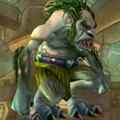
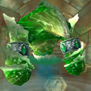
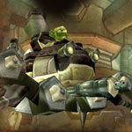
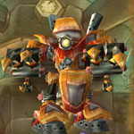
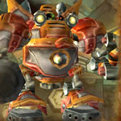

You can find the Gnomeregan dungeon within Dun Morogh, Eastern Kingdoms.
The coordinates are (31.8,37.6)


Route:
Map 1Map 2Map 3Map 4
Be aware that often LFD groups skip first boss and head straight for the parachute to the 2nd boss below.

Grab the parachute next to the plane (boss 3) and head down.

Be aware that your group might skip the 4th boss and take the other way to 5th boss.


Bosses:
1. Grubbis2. Viscous Fallout3. Electrocutioner 60004. Crowd Pummeler 9-605. Mekgineer Thermaplugg

Quick Boss Tactics:/i Start fight by talking to Blastmaster Emi Shortfuse at back of room. Deal with waves of mobs in tunnel before boss appears. Grubbis & his pet Chomper deal physical attacks.

Quick Boss Tactics:/i Careful of mobs nearby before pulling boss. Group gets poison ticks on them.

Quick Boss Tactics:/i Casts Shock on target, dealing nature damage. Interrupt Megavolt. Interrupt Chain Bolt.

Quick Boss Tactics:/i Boss deals physical damage attacks. Avoid front attack Arcing Smash.

Quick Boss Tactics:/i Interrupt Steam Blast. Interrupt Welding Beam. Keep moving to avoid Walking Bombs.